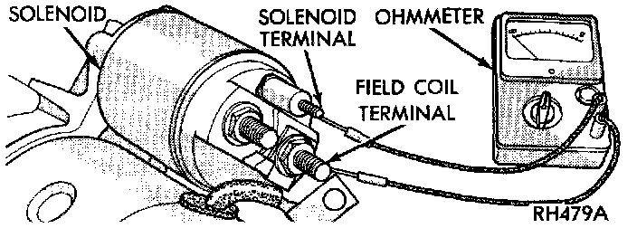
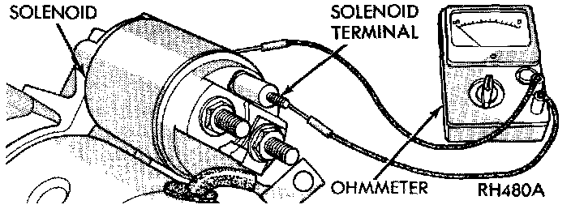
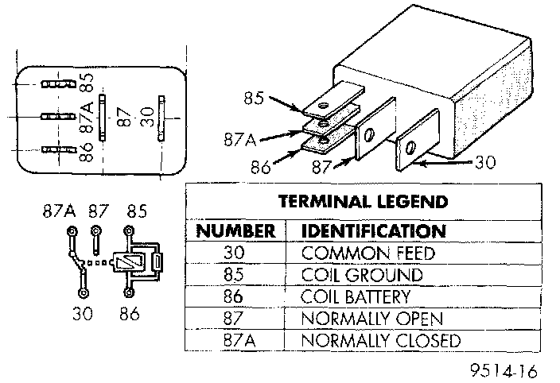

Control Circuit Test
The starter control circuit consists of:- Battery
- Starter relay
- Starter solenoid
- Ignition switch
- Park/neutral position switch (automatic transmission)
- Clutch pedal position switch (manual transmission)
- Wire harness and connections.
Test procedures for these components should be performed in the order in which they are listed, as follows:
SOLENOID TEST
Remove the starter as described. Then proceed as follows:
1. Remove the wire from the solenoid field coil terminal.
Continuity Test Between Solenoid Terminal And Fried Coil Terminal:

2. Check for continuity between the solenoid terminal and the field coil terminal with a continuity tester. There should be continuity. If OK, go to Step 3. If not OK, replace the faulty starter assembly.
Continuity Test Between Solenoid Terminal And Solenoid Case:

3. Check for continuity between the solenoid terminal and the solenoid case. There should be continuity If OK, go to Step 4. If not OK, replace the faulty starter assembly.
4. Connect the solenoid field coil wire to the field coil terminal.
5. Install the starter as described.
Starter Relay:

RELAY TEST
The starter relay is located in the Power Distribution Center (PDC) in the engine compartment. Refer to the PDC label for starter relay identification and location.
Remove the starter relay from the PDC as described to perform the following tests:
1. A relay in the de-energized position should have continuity between terminals 87A and 30, and no continuity between terminals 87 and 30. If OK, go to Step 2. If not OK, replace the faulty relay.
2. Resistance between terminals 85 and 86 (electromagnet) should be 75 ± 5 ohms. If OK, go to Step 3. If not OK, replace the faulty relay.
3. Connect a battery to terminals 85 and 86. There should now be continuity between terminals 30 and 87, and no continuity between terminals 87A and 30. If OK, see the Relay Circuit Test procedure. If not OK, replace the faulty relay.
RELAY CIRCUIT TEST
1. The relay common feed terminal cavity (30) is connected to battery voltage and should be hot at all times. If OK, go to Step 2. If not OK, repair the open circuit to the PDC fuse as required.
2. The relay normally closed terminal (87A) is connected to terminal 30 in the de-energized position, but is not used for this application. Go to Step 3.
3. The relay normally open terminal (87) is connected to the common feed terminal (30) in the energized position. This terminal supplies battery voltage to the starter solenoid field coils. There should be continuity between the cavity for relay terminal 87 and the starter solenoid terminal at all times. If OK, go to Step 4. If not OK, repair the open circuit to the starter solenoid as required.
4. The coil battery terminal (86) is connected to the electromagnet in the relay. It is energized when the ignition switch is held in the Start position. On vehicles with a manual transmission, the clutch pedal must be fully depressed for this test. Check for battery voltage at the cavity for relay terminal 86 with the ignition switch in the Start position, and no voltage when the ignition switch is released to the On position. If OK, go to Step 5. If not OK with an automatic transmission, check for an open or short circuit to the ignition switch and repair, if required. If the circuit to the ignition switch is OK, see the Ignition Switch Test procedure. If not OK with a manual transmission, check the circuit between the relay and the clutch pedal position switch for an open or a short. If the circuit is OK, see the Clutch Pedal Position Switch Test procedure.
5. The coil ground terminal (85) is connected to the electromagnet in the relay. On vehicles with an automatic transmission, it is grounded through the park/neutral position switch only when the gearshift selector lever is in the Park or Neutral positions. On vehicles with a manual transmission, it is grounded at all times. Check for continuity to ground at the cavity for relay terminal 85. If not OK with an automatic transmission, check for an open or short circuit to the park/neutral position switch and repair, if required. If the circuit is OK, see the Park/Neutral Position Switch Test procedure. If not OK with a manual transmission, repair the circuit to ground as required.
PARK/NEUTRAL POSITION SWITCH TEST
1. Place the transmission gear selector lever in the Park position.
2. Disconnect and isolate the battery negative cable.
3. Raise and support the vehicle.
4. Unplug the park/neutral position switch wire harness connector.
5. Check for continuity between the center switch terminal and a good chassis ground. There should be continuity. If OK, go to Step 6. If not OK, replace the faulty switch.
6. Move the transmission gear selector lever to the Reverse position and check for continuity between the center switch terminal and a good chassis ground. There should be no continuity. If not OK, replace the faulty switch.
CLUTCH PEDAL POSITION SWITCH TEST
The clutch pedal position switch is integral to the clutch pedal pushrod. It is located near the dash panel under the instrument panel.The wire harness connector for the switch is wrapped with foam tape.
1. Disconnect and isolate the battery negative cable.
2. Unplug the clutch pedal position switch wire harness connector.
3. Check for continuity between the two cavities in the switch-half of the wire harness connector with the clutch pedal released. There should be no continuity. If OK, go to Step 4. If not OK, replace the faulty switch.
4. Check for continuity between the two cavities in the switch-half of the wire harness connector again with the clutch pedal depressed. There should now be continuity. If OK, see the Ignition Switch Test procedure. If not OK, replace the faulty switch.
IGNITION SWITCH TEST
WARNING: ON VEHICLES EQUIPPED WITH AIR-BAGS, REFER TO AIR BAGS AND SEAT BELTS/AIR BAGS BEFORE ATTEMPTING STEERING WHEEL, STEERING COLUMN, OR INSTRUMENT PANEL COMPONENT DIAGNOSIS OR SERVICE. FAILURE TO TAKE THE PROPER PRECAUTIONS COULD RESULT IN ACCIDENTAL AIRBAG DEPLOYMENT AND POSSIBLE PERSONAL INJURY.
1. Disconnect and isolate the battery negative cable.
2. Remove the steering column shrouds and unplug the ignition switch wire harness connector.
3. With the ignition switch in the On position, check for continuity between the two fused B(+) terminals of the ignition switch (terminals 1 and 7). These are the terminals at each end of the switch connector receptacle. There should be no continuity If OK, go to Step 4. If not OK, replace the faulty switch.
4. With the ignition switch held in the Start position, check for continuity between the two fused B(+) terminals of the ignition switch (terminals 1 and 7). There should now be continuity. If not OK, replace the faulty switch.